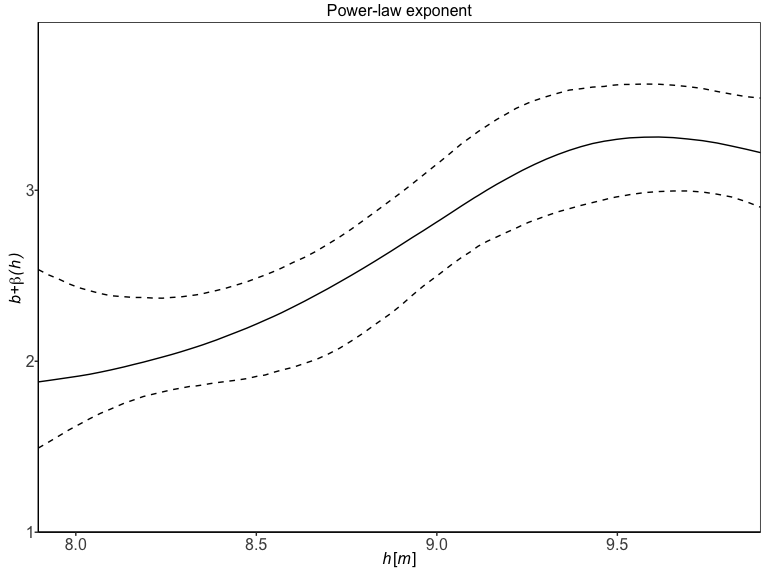

Introduction
Sölvi Rögnvaldsson, Axel Örn Jansson, Rafael Vias and Birgir Hrafnkelsson
Source:vignettes/introduction.Rmd
introduction.RmdA discharge rating curve (drc) is a model that describes the relationship between water stage and discharge in a river. The rating curve is estimated from paired observations of stage and discharge and it’s used to predict discharge for a given stage. This is the main practical usage of rating curves as stage is substantially easier to directly observe than discharge. Four different discharge rating curve models are implemented in this R package using a Bayesian hierarchical model:
plm0() - Power-law model with constant variance (hence the 0). This is a Bayesian hierarchical implementation of the most commonly used discharge rating curve model in hydrological practice
plm() - Power-law model with variance that may vary with stage
gplm0() - Generalized power-law model with constant variance (hence the 0)
gplm() - Generalized power-law model with variance that may vary with stage
For further details about the different models, see x. The models differ in their complexity and the gplm is the most flexible and complex model. We will focus on the use of gplm throughout this introduction vignette and explore the different ways to fit the gplm and visualize its output. However the API of the functions for the other three models are completely identical so this vignette also helps users to run those models.
We will use a dataset from a river called x in Sweden that comes with the package:
> data(V316_river)
> V316_river
#> W Q
#> 1 1.2380 8.05
#> 2 1.2470 8.37
#> 3 1.2520 8.68
#> 4 1.2660 8.59
#> 5 1.2680 8.38
#> 6 1.2770 10.50
#> 7 1.2800 9.33
#> 8 1.2800 9.50
#> 9 1.2830 9.29
#> 10 1.2860 7.61
#> 11 1.2960 10.20
#> 12 1.3000 10.10
#> 13 1.3010 9.58
#> 14 1.3100 10.35
#> 15 1.3250 11.20
#> 16 1.3390 10.30
#> 17 1.3450 11.10
#> 18 1.3520 10.90
#> 19 1.3540 12.40
#> 20 1.3850 14.20
#> 21 1.4125 16.80
#> 22 1.4130 15.20
#> 23 1.4670 18.50
#> 24 1.4700 19.10
#> 25 1.4800 19.40
#> 26 1.5660 24.40
#> 27 1.6260 27.50
#> 28 1.6300 29.60
#> 29 1.6580 31.70Fit a discharge rating curve
It is very simple to fit a discharge rating curve with the bdrc package. All you need are two mandatory input arguments, formula and data. The formula is of the form y~x where y is discharge in \(m^3/s\) and x is stage in \(m\) (it is very important that the data is in the correct units). data is a data.frame which must include x and y as column names. In our case, in V316_river, a column named Q includes are discharge measurements and W the stage measurements. We are ready to fit a drc using the gplm function:
gplm returns an object of class “gplm” which we can summarise and visualize using familiar functions such as
> summary(gplm.fit)
#>
#> Formula:
#> Q ~ W
#> Latent parameters:
#> lower-2.5% median-50% upper-97.5%
#> a 26.17 45.69 53.88
#> b 1.83 1.84 1.84
#>
#> Hyperparameters:
#> lower-2.5% median-50% upper-97.5%
#> c 0.59557 0.8545 0.923
#> sigma_beta 0.00531 0.1294 0.718
#> phi_beta 0.54256 16.7452 8864.820
#> sigma_eta 0.00350 0.0864 0.497
#> eta_1 -5.79900 -5.2720 -4.634
#> eta_2 -7.16317 -5.2903 -3.466
#> eta_3 -8.13086 -5.5183 -2.825
#> eta_4 -9.04431 -5.7683 -2.402
#> eta_5 -9.63585 -5.8815 -2.025
#> eta_6 -10.09233 -5.9720 -1.598
#>
#> DIC: 78.64078and

We will dive deeper into visualizing the “gplm” object in the next sections.
Visualizing posterior distributions of different parameters
The bdrc package provides several tools to visualize the results from the drc model and can give insight into the physical properties of the river at hand. For instance, the hyperparameter \(c\) corresponds to the stage of zero discharge. To visualize the posterior of \(c\), we can write
 Since \(c\) is a strictly positive parameter, it is transformed during Bayesian inference s.t. it has support on the real line with \(\zeta=log(h_{min}-c)\). To plot the transformed posterior we write
Since \(c\) is a strictly positive parameter, it is transformed during Bayesian inference s.t. it has support on the real line with \(\zeta=log(h_{min}-c)\). To plot the transformed posterior we write
 the param argument can also be a vector of different parameter names. To visualize the posterior distribution of many parameters at once we can for instance write
the param argument can also be a vector of different parameter names. To visualize the posterior distribution of many parameters at once we can for instance write
 There is a shorthand to visualize all hyperparameters at once
There is a shorthand to visualize all hyperparameters at once
 Similairily, writing ‘latent_parameters’ plots the latent parameters in one plot. To plot the hyperparameters transformed, on the same scale as in the Bayesian inference, we write
Similairily, writing ‘latent_parameters’ plots the latent parameters in one plot. To plot the hyperparameters transformed, on the same scale as in the Bayesian inference, we write

Finally, we can visualize certain components of the drc models that may vary with stage, the power-law exponent \(f\) and the standard deviation on the data level \(\sigma_{\varepsilon}\). gplm0 and gplm generalize the power law exponent, model it as a function of stage \(f(h)=b+\beta(h)\), while in plm and plm model the exponent is a fixed constant \(f(h)=b\). We can plot the exponent with
 plm and gplm model the standard deviation, \(\sigma_{\varepsilon}\) on the data level as a function of stage, namely as a linear combination of B-splines functions, while plm and gplm0 model the variance is a fixed constant. We can plot the standard deviation by writing
plm and gplm model the standard deviation, \(\sigma_{\varepsilon}\) on the data level as a function of stage, namely as a linear combination of B-splines functions, while plm and gplm0 model the variance is a fixed constant. We can plot the standard deviation by writing

Assessing model fitness and convergence
The package has several functions for convergence diagnostics of a bdrc model, most notably the residual plot, tracing plots, autocorrelation plot and the Gelman-Rubin statistic. The residuals are presented as a function of \(log(h-c)\) as the model is linear (or generalized linear) on that scale.
 The traceplots are most meaningful on the transformed scale. To plot a trace plot for a single parameter, write

To plot a trace plot for all hyperparameters, you write similiarily as above

To assess the mixing and convergence of the MCMC chains for each parameter, you can visualize \(\hat{R}\) as presented by Gelman and Rubin with:
 And finally autocorrelation of parameters can be assessed with
And finally autocorrelation of parameters can be assessed with

Customization of models
There are ways to customize the gplm further. In some instances, the parameter of zero discharge, \(c\), is known and then you want to fix that parameter to the known value in the model. In addition you might want to extrapolate the rating curve to higher stage values by adjusting the maximum stage. Assume 0.75 m is the known value of \(c\) and you want to calculate the rating curve for stage values up to 2.5 m, then your function call would look like this
> gplm.fit.known_c <- gplm(Q~W,V316_river,c_param=0.75,h_max=2.5)
> summary(gplm.fit.known_c)
#>
#> Formula:
#> Q ~ W
#> Latent parameters:
#> lower-2.5% median-50% upper-97.5%
#> a 34.98 38.22 41.38
#> b 1.83 1.84 1.84
#>
#> Hyperparameters:
#> lower-2.5% median-50% upper-97.5%
#> sigma_beta 0.14170 0.3193 0.821
#> phi_beta 0.46151 15.4595 9469.414
#> sigma_eta 0.00212 0.0844 0.490
#> eta_1 -5.85767 -5.3086 -4.687
#> eta_2 -7.12480 -5.2538 -3.378
#> eta_3 -8.02882 -5.4662 -2.793
#> eta_4 -8.95184 -5.6803 -2.338
#> eta_5 -9.57923 -5.8385 -1.825
#> eta_6 -10.07641 -5.9312 -1.442
#>
#> DIC: 77.56578one neat way to geta visualization summary of your model is to use the ‘collage’ option in the plot method:

Prediction for an equally spaced grid of stages
To get rating curve predictions for an equally spaced grid of stage values, you can use the predict function. Note that only values in the range from \(c\) and h_max are accepted, as that is the range in which the Bayesian inference was performed
> h_grid <- seq(0.75,2.0,by=0.01)
> rating_curve_h_grid <- predict(gplm.fit.known_c,newdata=h_grid)
> print(rating_curve_h_grid)
#> h lower median upper
#> 1 0.750000 0.00000000 0.00000000 0.0000000
#> 2 0.800000 0.03001399 0.04798889 0.1299211
#> 3 0.850000 0.15727987 0.22434579 0.4581535
#> 4 0.900000 0.41458491 0.55323953 0.9478464
#> 5 0.950000 0.82331506 1.05484655 1.5932967
#> 6 1.000000 1.40194704 1.73248620 2.3890295
#> 7 1.050000 2.14002249 2.59574836 3.3746640
#> 8 1.100000 3.07829609 3.66249493 4.5083912
#> 9 1.150000 4.19478572 4.93561856 5.9070234
#> 10 1.200000 5.51199361 6.41468190 7.5369545
#> 11 1.238000 6.61843082 7.67570669 8.9545644
#> 12 1.247000 6.88700333 8.00534888 9.2880557
#> 13 1.252000 7.05230527 8.18201332 9.4642475
#> 14 1.266000 7.49689617 8.68401035 10.0611693
#> 15 1.268000 7.57489605 8.75536228 10.1477635
#> 16 1.277000 7.88934878 9.11048596 10.5366438
#> 17 1.280000 7.97530100 9.21889018 10.6588468
#> 18 1.283000 8.09072497 9.33309393 10.7949172
#> 19 1.286000 8.16719291 9.44460450 10.9545329
#> 20 1.296000 8.48756710 9.84515504 11.4300187
#> 21 1.300000 8.71258934 10.00427451 11.6136058
#> 22 1.301000 8.67176396 10.06073545 11.6084091
#> 23 1.310000 9.01412861 10.43434503 12.0246646
#> 24 1.325000 9.55746961 11.08090500 12.8294096
#> 25 1.339000 10.15882689 11.68678128 13.4698781
#> 26 1.345000 10.37716359 11.95279349 13.7845951
#> 27 1.352000 10.64439907 12.25906489 14.1307482
#> 28 1.354000 10.67594746 12.34080012 14.2629505
#> 29 1.385000 12.00022090 13.82760759 15.8783822
#> 30 1.412500 13.18719804 15.20993235 17.4951534
#> 31 1.413000 13.17173401 15.23195731 17.5590449
#> 32 1.431000 14.04853848 16.16252491 18.5939920
#> 33 1.449000 14.80152423 17.14810446 19.7677841
#> 34 1.467000 15.69504212 18.14091984 20.8663375
#> 35 1.470000 15.85035326 18.33823106 21.1322724
#> 36 1.480000 16.30878230 18.89532126 21.8901231
#> 37 1.508667 17.79074039 20.58073045 23.7706932
#> 38 1.537333 19.28093250 22.40973604 25.8509816
#> 39 1.566000 20.92960932 24.29064998 27.9886491
#> 40 1.586000 22.13460346 25.65041008 29.5897640
#> 41 1.606000 23.19761885 27.00116534 31.3220709
#> 42 1.626000 24.44381818 28.46812296 33.0028638
#> 43 1.630000 24.65699480 28.74838704 33.3287850
#> 44 1.658000 26.44257429 30.79773128 35.8662111
#> 45 1.704778 29.44645611 34.46361801 40.0089184
#> 46 1.751556 32.45689022 38.36018944 44.8285025
#> 47 1.798333 35.88505409 42.41286574 49.7711680
#> 48 1.845111 39.22622665 46.77848265 55.0700578
#> 49 1.891889 42.68958640 51.37791687 60.9807806
#> 50 1.938667 46.22415454 56.17884073 67.0394005
#> 51 1.985444 49.50154650 61.18462821 73.3067725
#> 52 2.032222 53.69042038 66.47205512 80.1046108
#> 53 2.079000 57.43157894 71.98289475 87.3375184
#> 54 2.125778 61.31741875 77.66480152 95.0425549
#> 55 2.172556 65.24424371 83.63711873 103.5323419
#> 56 2.219333 69.24709462 89.84260614 111.4686141
#> 57 2.266111 72.81300698 96.05560110 120.2713300
#> 58 2.312889 77.14922905 103.02441640 129.5062657
#> 59 2.359667 81.02992030 109.94532455 138.5973855
#> 60 2.406444 84.93256036 116.91867060 149.4111995
#> 61 2.453222 89.04354751 124.33675871 159.8558188
#> 62 2.500000 93.32718123 132.03198063 170.9321052